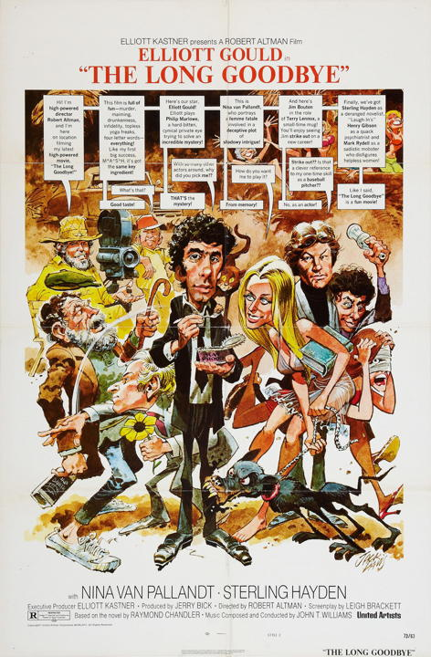

The Society for Practical Utopians
Working together to shape a brighter future for humanity
Why Art?
By Herb Bowie
tags: art

I’ve noticed that Big Thinkers – people like Ken Wilber and Yuval Noah Harari – tend to get confused about art and why it matters. Unable to find a neat place for it in their developmental models of civilization, they end up citing that old chestnut of “Beauty is in the eye of the beholder” and leaving it at that, as an entirely subjective experience. Everyone’s idea of beauty can be different, they say, and they’re all equally valid. Whatever floats your boat. So now let’s stop gibbering about art and move on to more important topics.
Of course, I’ve never run across an actual artist who sees things this way.
Let me recount what seems to me to be the complete artistic process.
-
A prospective artist learns some craft that allows them to manipulate images, sounds or words in a way that is appealing to others. They often learn this craft by emulating other artists who have come before them.
-
The artist’s creativity is sparked by some new technique, perhaps enabled by an advance in technology.
-
The artist has an inner experience about something – a feeling, a thought, an insight, or likely some sensation harder to pigeonhole – that feels unique to them. Insofar as they can tell, others around them are not having, or have not had, this same experience.
-
The artist feels a strong desire for expression and communion.
-
The artist uses her acquired craft to fashion an object that can be shared with others: a painting, a song, a story, or something else that can be observed in some way.
-
This object proves to indeed be different from other similar objects.
-
Moreover it is different in a way that betrays traces of its authorship. A sufficiently informed observer becomes aware that this singular work of art could only have been produced by this particular auteur.
-
Contemplation of this object helps to replicate in its audience something of the original inner experience that the artist had back in Step 3.
-
As a result of this shared experience, observers henceforth live different lives than they would have without this work of art. These may be big differences, or small differences, but they are in some sense important differences.
And so, by the end of this whole cycle, what exactly has been accomplished?
-
We have had demonstrated for us the value of the individual, since what started as a unique experience by a single person has now enriched many.
-
We have had demonstrated for us some element of our common humanity, for what started as a unique feeling has now been shared with a host of others.
-
We have experienced personal growth. Individuals who have come under the spell of a particular work are now able to see the world in some new way.
-
We have collectively expanded our notion of what it means to be human, for by accepting this new object as a work of art, we have forever enlarged our definition of the human experience.
-
We have taken steps, in one way or another, to help create a more human world, an environment that is more welcoming and more caring for actual human beings.
So you can see that, if my claims are true, appreciation of art is much more than the purely subjective experience that some Big Thinkers would portray for us.
At this point, you may well ask my credentials for making such claims. I am not, of course, myself an artist because, if I were, I would probably be doing these things, not talking about how or why they are done.
But hardly a week goes by without me being on the receiving end of this process in one way or the other. Just a few days ago I had the privilege of hearing Sam Bush and his Band performing Leon Russell’s song, “Stranger in a Strange Land.” About a month before that I was lucky enough to be in the audience to hear Sarah Jarosz performing the Tom Waits song “Come On Up to the House.” Something magical happens to me in these moments, and I’m a changed, better person afterwards: more alive, more connected to others.
Don’t just take my word for it, though. Fortunately for us, some actual artists have spoken on this topic as well. Let’s see what they have to say.
For those such as Harari, who point to experiments in which computer algorithms have written music that can be confused with the works of Beethoven, I would remind them of these words from mystery author Raymond Chandler:
There are no vital and significant forms of art; there is only art, and precious little of that. The growth of populations has in no way increased the amount; it has merely increased the adeptness with which substitutes can be produced and packaged.
And for those who think empires can be built on science alone, there are these words from poet William Blake:
The foundation of empire is art and science. Remove them or degrade them, and the empire is no more. Empire follows art and not vice versa as Englishmen suppose.
Countering the notion that the goal of art is the mere appreciation of beauty, author Anthony Burgess has said:
The excitement we derive from a work of art is mostly the excitement of seeing connections that did not exist before, of seeing quite different aspects of life unified through a pattern.
And expressing the power of art to improve one’s life, we have trumpeter Wynton Marsalis:
When I started learning about jazz, I wasn’t into any kind of art. I had no idea it could have a practical purpose. Now, more than thirty years later, I testify to the power of art, and more specifically jazz, to improve your life – and keep on improving it.
And in a similar vein we have author C.S. Lewis:
Those of us who have been true readers all our life seldom fully realize the enormous extension of our being which we owe to authors. We realize it best when we talk with an unliterary friend. He may be full of goodness and good sense but he inhabits a tiny world. In it, we should be suffocated. The man who is contented to be only himself, and therefore less a self, is in prison. My own eyes are not enough for me, I will see through those of others. Reality, even seen through the eyes of many, is not enough. I will see what others have invented.
And Marsalis again, talking about the power of the arts to increase our appreciation for humanity:
Jazz insists on the undisputed sovereignty of the human being. In this technological era we can easily be fooled into believing that sophisticated machines are more important than progressive humanity. That’s why art is an important barometer of identity. The arts let us know who we are in all of our glory, reveal the best of who we are. All the political and financial might in the world is diminished when put to the service of an impoverished cultural agenda.
We all know that civilization requires a supreme effort. Our technology will become outmoded, but the technology of the human soul does not change.
And for those who think that art is a mere adornment, the icing on the cake, something pleasant but nonessential, I’ll finish with these words from author Henry Miller:
Men are not suffering from the lack of good literature, good art, good theatre, good music, but from that which has made it impossible for these to become manifest. In short, they are suffering from the silent, shameful conspiracy (the more shameful since it is unacknowledged) which has bound them together as enemies of art and artist. They are suffering from the fact that art is not the primary moving force in their lives. They are suffering from the act, repeated daily, of keeping up the pretense that they can go their way, lead their lives, without art.
Tags
 Copyright © 2009 - 2017 by Herb Bowie except where otherwise noted
Copyright © 2009 - 2017 by Herb Bowie except where otherwise noted